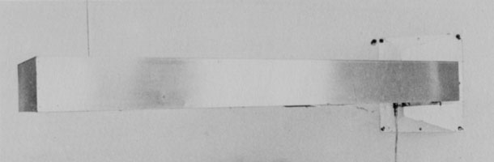
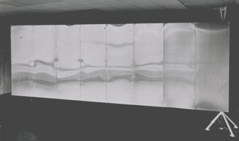
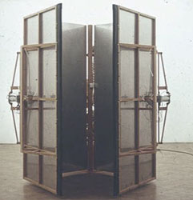
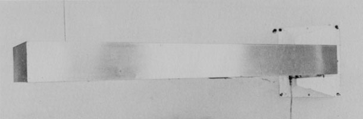
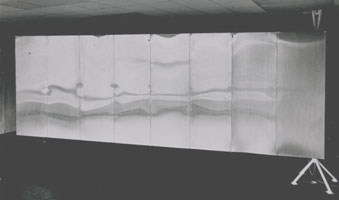
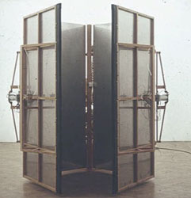

mechanics
mechanics  radical
art homepage
radical
art homepage
shove
|
|||
 |
|||
 |
 |
||
|
|||
References
|
|||

mechanics
shove
Ray Staakman
Beams or panels that move slowly across the exhibition space. The spectator is pushed out of the room by the artwork, or ends up being completely enclosed.

Machine No.1.969, 1969

Machine No.1.170
Groninger Museum, 1970

Machine No. 1.273
Lucy Milton Gallery, London, 1973

Machine 1.173 – Galerie Ernst, Hannover, 1973
References
Anon.: Ray Staakman. 6 pp. brochure. Eindhoven: Van Abbemuseum, 1974.
Carel Blotkamp: "Ray Staakman." Museumjournaal 17, 5 (October 1972), pp. 209-214.
Poul ter Hofstede: "Bonies en Staakman." Museumjournaal 15, 2 (April 1970), pp. 96-97.